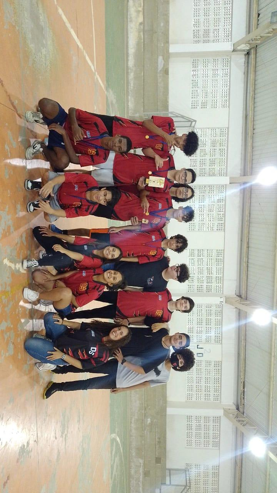
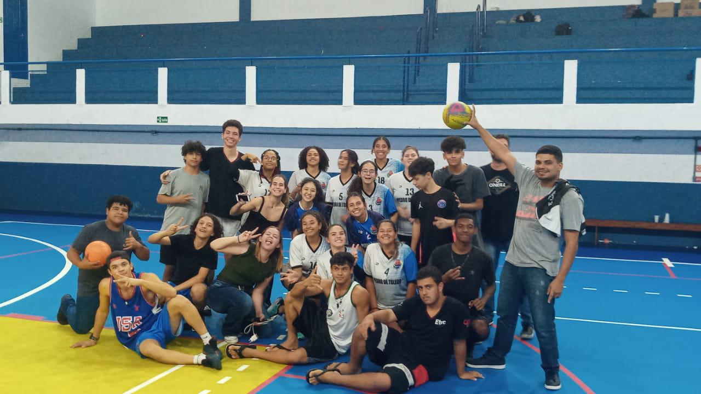

Debug Wave
A Debug Wave é um grupo da Etec de Peruíbe criado com o propósito de solucionar os problemas recorrentes relacionados a organização dos eventos esportivos da escola. Este site propõe algumas solucões para as problemáticas propostas pelo Hackathon, como: a dúvida sobre a data dos eventos, organização das equipes e com quem irão jogar, colocações das equipes competidoras e a divulgação dos eventos.
Interclasse
Interclasse é uma competição promovida entre as salas de uma instituição de ensino, podendo ser competições esportivas como vôlei, futsal, basquete ou até competições lógicas como xadrez e dama. As modalidades contempladas na Etec de Peruíbe são: Futsal masculino e feminino, vôlei e possivelmente handebol.
JEESP
Os Jogos Escolares do Estado de São Paulo é uma competição que abrange todo o estado, em que ocorrem competições esportivas entre escolas com o propósito de integração, intercâmbio entre os estudantes, compreensão do corpo como um todo, contudo, visando como principal objetivo promover a prática esportiva. O JEESP inclui várias modalidades, as príncipais sendo: atlestismo, basquete, xadrez, futebol, ginástica, tênis e artes marciais também.
E-sports
Eletronic Sports ou E-sports são competições esportivas realizados por intermédio de jogos eletrônicos, em que os jogadores competem contra o outro em games como League of Legends, Valorant, CS:GO e Rocket League, podendo ser ou não formados por times. As modalidades abrangem jogos de plataformas desde computadores, consoles de videogames e até dispostivos mobile.